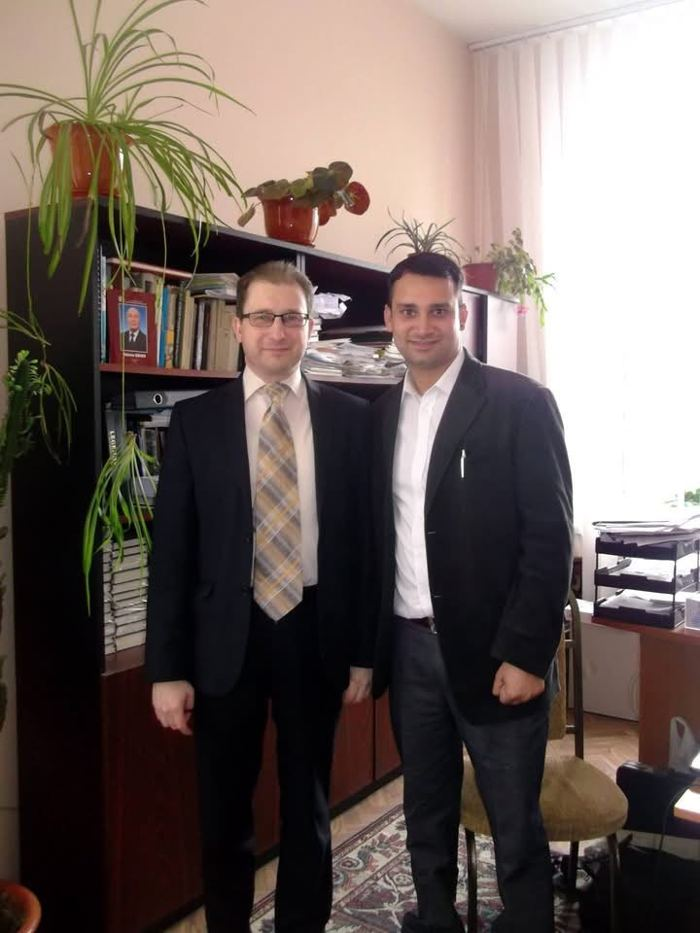
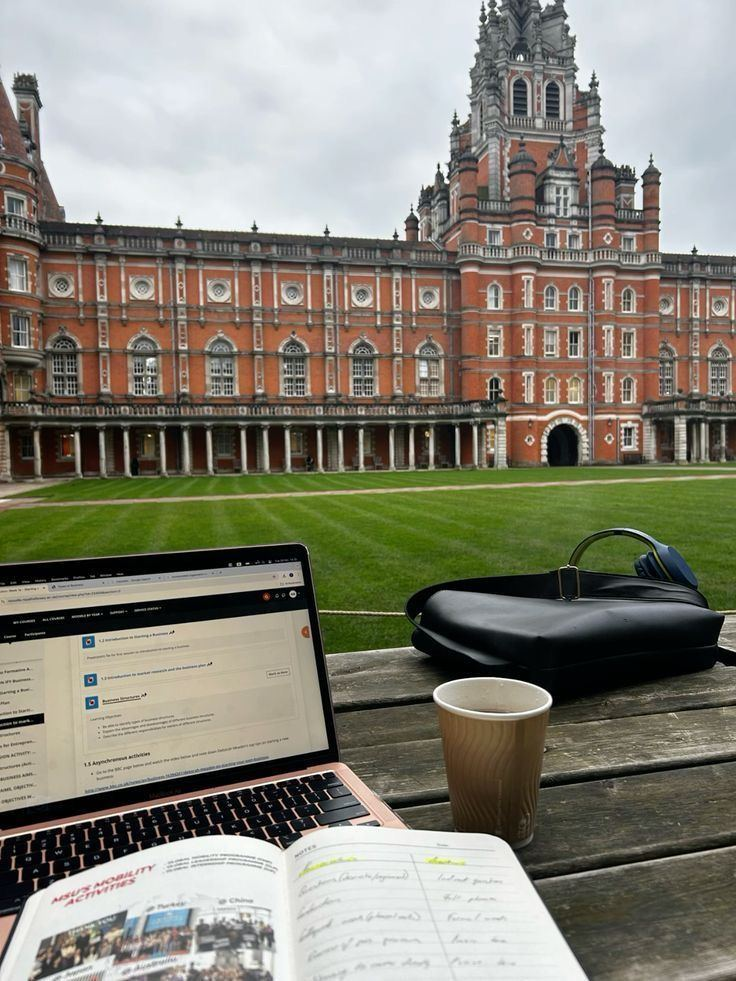
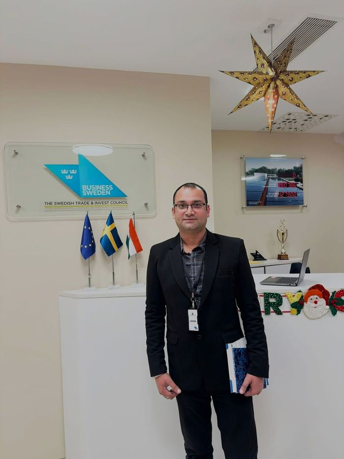
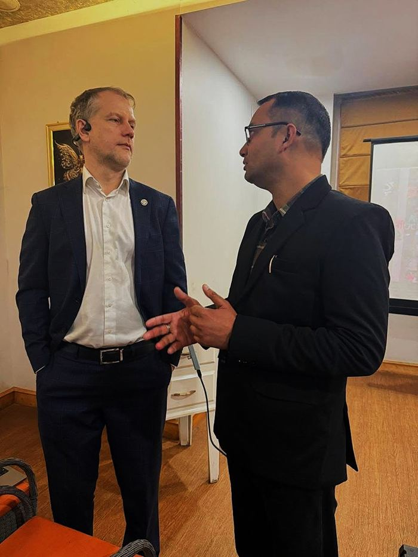

Your route to study, work and travel abroad.
Honest guidance from Karnal for students and families: choosing the right course and country, preparing for IELTS, PTE or TOEFL, and filing a complete visa application.

+91 89306 11883
From Karnal to the world.
We plan the whole journey with you: course, test, visa and the flight that follows.

Study on a campus like this.
Ancient halls, green lawns and a laptop on a bench. We help you find the course and the place where that life becomes yours, then take care of the paperwork to get you there.
- Shortlist universities by course, budget and entry score
- Prepare IELTS, PTE or TOEFL for the score you need
- File a complete, honest visa application
Where you can go
Pick a country to read the full guide: costs, visa steps, work rights and universities.

Study in Canada
Recognised degrees, post-study work options and a welcoming, multicultural society.
Read the guide →
Study in United Kingdom
Shorter degrees, world-renowned universities and a post-study Graduate route.
Read the guide →
Study in Germany
Low or no tuition at public universities, strong engineering and an 18-month job-search permit.
Read the guide →
Study in Australia
High-quality education, a relaxed lifestyle and work rights during and after study.
Read the guide →
Study in Singapore
An English-speaking education hub in Asia with strong industry links and a safe environment.
Read the guide →
Study in Ireland
A friendly English-speaking EU country with a graduate stay-back option.
Read the guide →How we work
Free consultation
We learn your marks, budget and goals.
Test and applications
You prepare for the English test while we handle applications.
Documents and visa
We check, organise and file your visa application.
Before you fly
Travel, accommodation and arrival guidance.
In touch with international partners

